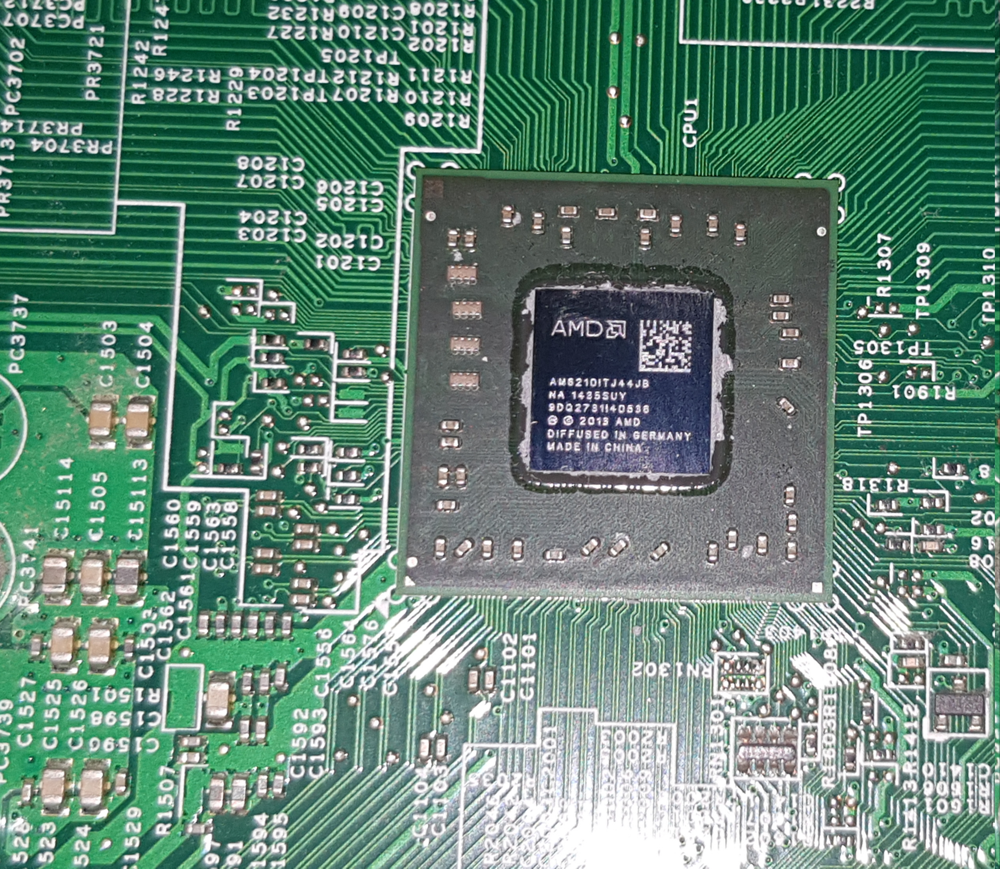

A4 6210
L'A4 6210 è un processore iper economico adottato sui laptop avendo un
reparto grafico di un livello molto alto in confronto a quello della controparte Intel Celeron/ Intel Pentium.
Il reparto logico non è dei migliori, si parla anche di una CPU con un TDP di 15watt e con 4 core a 1.8GHz.
Quindi non ci si può aspettare un processore prestante. Bastato su microarchitettura Puma ed architettura Beema (28 nm).
È adatto per eseguire delle operazioni molto basilari, come navigazione web.
Il processore ha soket FT3B (BGA769).
Specifiche tecniche
| Classe | Laptop |
| Brand | AMD |
| Numero di cores | 4 |
| Soket | FT3B (BGA769) |
| Anno di lancio | 2014 |
| Frequenza | 1.8 GHz |
| TDP | 15 W |
| Numero di cores logici | 4 |
| Velocità massima in overclock | NaN GHz |
| Valore commerciale | NaN - 26€ |
Altre info
Il processore è il terzo processore più potente su soket FT3B preceduto dall'AMD GX424CC SOC e dall'AMD PRO A4 3350B.
Il processore in se non è di cattivo livello dato che il prezzo di questo si aggira intorno ai 26€, il problema è come le "Famose aziende che promettono di venderti buoni prodotti a prezzi vantaggiosi" ne facciano uso.
Dato che è stato anche adattato a desktop da una azienda
"molto valida". Come detto in precedenza l'A4 su laptop è un processore che "Può andare", mentre su Desktop l'A4 è un processore inutile,
dato che sui Desktop ogni APU (tranne i nuovi ryzen) non hanno senso di essere messi, su un pc desktop non bisogna preoccuparsi più di tanto del TDP di un processore, quanto più delle prestazioni di esso.
l'A4 è un processore pensato per i bassi consumi, un'alternativa poco superiore alle CPU ARM in commercio, incapace di gestire anche più di 17 pagine di un qualsiasi browser.
Un processore del genere nel 2020 è un processore che fa pena, con delle prestazioni poco superiori a quelle di un pentium 4 da 3.8GHz,
ed anche impossibile da overclockare ed anche impossibile da aggiornare...
Immagini dell'A4 6210
